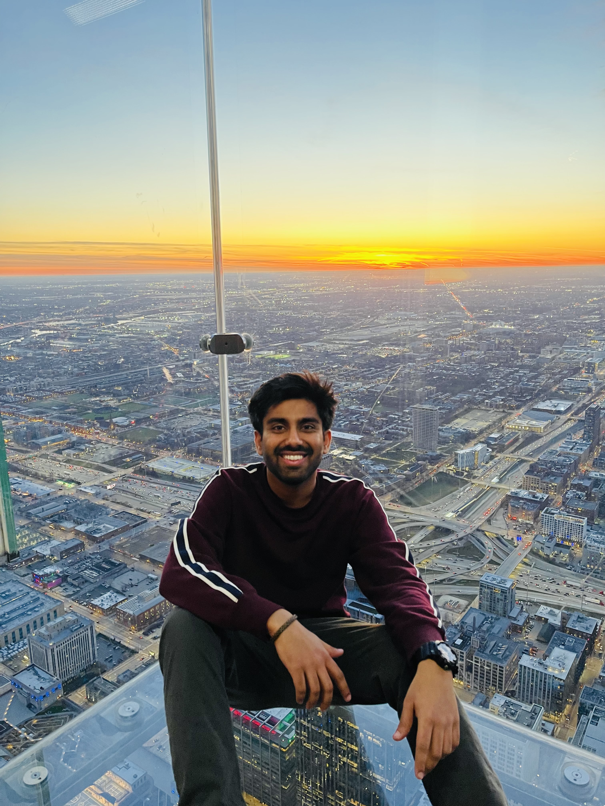

|
Nitin Jotwani
I'm presently a first year masters student in the department of Computer Science Engineering and Statistics at the University of Michigan in Ann Arbor. I completed my undergraduate majoring in computer science and computational mathematics from
Manipal Instiute of Technology at Manipal, India
After obtaining my bachelor's degree, I interned at Philips Healthcare focusing on frontend software development for the XRay product, Eleva. Subsequently, I pursued my dream of working in data science, joining Citibank as a data scientist on the Analytics & Information Management team. Later, I transitioned to American Express, where I worked as a data scientist on the Global Commercial Analytics team.
Email /
LinkedIn /
Twitter /
Github
|

|
Interests
After a successful two-year stint in the fintech industry, I am currently pursuing a master's degree with a strong focus on deep learning, computer vision, and generative AI.
Additionally, I have a keen interest in the field of optimization for machine learning.
Current Research - Working to improve grounding alignment between images and text in large Vision and Language Models (VLMs) at the University of Michigan.
I am on a lookout for opportunities in the summer of 2024. I would be available for a duration of 10-14 weeks beginning in May. Hit me up for a chat!
|
Courses at UMich
EECS 545 - Machine Learning
EECS 551 - Matrix Methods for Image Processing and Machine Learning
EECS 504 - Foundations of Computer Vision
ROB 535 - Self Driving Cars : Perception and Control
ROB 598 - Deep Learning for Robotic Perception
EECS 409 - Data Science and Machine Learning Colloquium
GPA : 4.0/4.0
Expected Graduation Date : April, 2025
|
Work Experience
AMERICAN EXPRESS
Data Scientist
- Contributed in the end-to-end deployment of XGBoost, a classification ML model, to implement strategy-based suppression controls on product offers. This involved rigorously tuning the model to align with the specific needs of U.S. small business card services, ensuring optimal balance between offer attractiveness and profitability.
- Significantly enhanced model accuracy by meticulously engineering features, leading to a 12% reduction in false positive rates. This process involved deep analysis and transformation of complex datasets, ensuring that the model accurately identifies patterns and trends relevant to offer churn in basic card acquisition.
- Demonstrated expertise in data analysis by effectively utilizing SQL to process and analyze large datasets. This involved writing complex queries, optimizing data retrieval, and ensuring data integrity, which were crucial for the accurate training and functioning of the machine learning models.
- The deployed model played a crucial role in mitigating Supplementary Card Offer Exploitation, influencing 26% of new card acquisitions. This strategic application of data science directly contributed to a substantial increase in basic-balance-amount by $580 million, along with a marked cost saving of $5.4 million in initial investments.
CITIBANK
Data Scientist
- Employed clustering algorithms, including Birch and GMM, with sentence-level BERT embeddings for text clustering and topic modeling.
- Gained insights into pain points from a dataset comprising 3.5 million emails and 95,000 survey comments from 750,000 corporate clients.
- Engineered a comprehensive data pre-processing pipeline encompassing named-entity recognition, parts-of-speech tagging, lemmatization, and regex operations.
- Devised an algorithm using Fuzzy-Wuzzy and Semantic Matcher libraries to effectively eliminate disclaimers from emails, achieving successful disclaimer removal on a self-curated dataset, covering 93% of the email data.
- Awarded an honor for outstanding contributions to NLP research and the development of models with superior performance in comparison to existing solutions. The project was chosen to be presented at the NASSCOM Conference in India.
PHILIPS HEALTHCARE
Software Engineering Intern
- Focused on improving user experience across various diagnostic imaging modalities by harmonizing the graphical user interface (GUI) - inspired by Apple products' ecosystem.
- Successfully migrated UI functions from Java Swing API to JavaFX API, enhancing code efficiency and traceability.
- Maintained a code coverage of approximately 99% through extensive testing with JUnit 5 and the Mockito framework.
- Worked closely with UI/UX teams to coordinate and integrate the Design Language Specification (DLS) into the project.
- Actively participated in Agile development processes, including sprints and scrum meetings, and utilized Azure DevOps for project management.
- Developed expertise in JavaFX, Agile methodologies, unit testing with JUnit and Mockito, and other key software development practices.
- Demonstrated expertise in software architecture and coding by implementing the Model-View-Controller (MVC) architecture, adhering to SOLID principles, and applying design patterns. This approach led to a reduction in code maintenance efforts and improved code maintainability.
|
Projects
Scene Animation using (RGB) Images and Depth Maps
University of Michigan
- Developed an innovative Scene Animation using (RGB) Images and Depth maps, incorporating a fusion algorithm (EnGD) to merge real-world RGB images with depth maps and customized gradient maps.
- Leveraged StyleGAN2 in a three-step process, achieving stylized and realistic effects on animated images.
- Demonstrated success through sequential steps on real-world images and training on a pseudo-paired Shinkai-style anime dataset.
- Code is available here.
Neural Nets in High-Performance Computing (HPC) Applications
Hewlett Packard Enterprise x Dr. Muralikrishna SN, MIT, Manipal
- Verified the findings in the publication titled "A Preliminary Study of Neural Network-based Approximation for HPC Applications."
- Created a seq2seq model with 2 recurrent layers employing LSTMs to compute polynomial equation roots.
- Achieved an absolute error within a 0.2 limit, surpassing the prescribed CNN model's accuracy, and realized a 2.7x speedup.
Hand Gesture and Motion Recognition
Tata Consultancy Services, Research Center x Dr. PB Shanthi, MIT, Manipal
- Developed a hand gesture and motion recognition system in OpenCV for car stereo systems, facilitating precise control over volume, channel selection, and phone-call operations.
- Leveraged image processing techniques like background subtraction and contour detection for a 12% improvement in accuracy.
- Implemented optimized frame skipping, buffering techniques, and image resolution reduction to reduce the average frame processing time down to 25 milliseconds, significantly improving system responsiveness.
- Applied concepts from academic papers for identifying facial landmarks and calculating the eye aspect ratio (EAR) for blink rate analysis, contributing to the advancement of driver safety features.
|
|
{kind=link}